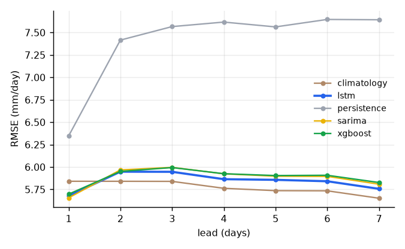

Pooled skill (all 20 cities)
Figures generated by hfs.benchmark.report from the same test-year predictions.



Held-out test split (2022) — models never saw these data. Observed = ERA5 at the city's 0.25° cell. Open city page →
RMSE per lead over the selected window.
RMSE · MAE · NSE over the window, computed in the browser from the exported predictions.
Figures generated by hfs.benchmark.report from the same test-year predictions.
